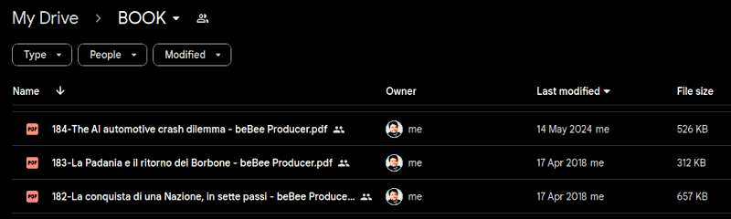

Roberto A. Foglietta
Rationale
EN Linkedin and beBee articles collected along the time in PDF format. Written and published under the personal brand
Roberto A. Foglietta by Roberto Foglietta since 2016. This collection is presented here because with a certain regularity, usually 4 years, the social accounts are unilaterally deleted or frozen. The author's habit to print in PDF his articles and uploading on several Google Drive accounts made them last through adversities. The personal brand was created a little before 2000, in order to avoid existing and not desirable homonyms.
IT Articoli di Linkedin e beBee raccolti nel tempo in formato PDF. Scritti e pubblicati sotto il marchio personale
Roberto A. Foglietta da Roberto Foglietta a partire dal 2016. Questa raccolta viene presentata qui perché con una certa regolarità, di solito 4 anni, gli account social vengono unilateralmente cancellati o congelati. L'abitudine dell'autore di stampare in PDF i suoi articoli e di caricarli su diversi account Google Drive li ha conservati nonostante le avversità. Il marchio personale è stato creato un po' prima del 2000, per evitare omonimie esistenti e non desiderabili.
EN The PDFs collection is splitted into two folders
pdf.todo and
pdf.done depending on whether they have already been converted to markdown format or not. Because the purpose of this project is also to revise and give a coherent and cohesive connotation to the collection of writings, not only to collect them in a single repository.
IT La raccolta di PDF é divisa in due cartelle
pdf.todo e
pdf.done a seconda che siano già stati convertiti in formato markdown o meno. Perché lo scopo di questo progetto è anche quello di revisionare e dare una connotazione coerente e coesa all'insieme degli scritti, non solo di raccoglierli in un unico repository.
Update 2025-02-24
EN My LinkedIn account access has been restored (down from 2024-12-15 up to 2025-02-23) and I took the chance to download my data, in particular all the articles. Among them I also found the drafts I did publish because I did not complete the writing or the review. Anyway, I am going to share that stuff as well starting from this
link in their original HTML format.
IT L'accesso al mio account LinkedIn è stato ripristinato (down dal 2024-12-15 al 2025-02-23) e ho colto l'occasione per scaricare i miei dati, in particolare tutti gli articoli. Tra questi ho trovato anche le bozze che avevo pubblicato perché non avevo completato la stesura o la revisione. Ad ogni modo, condividerò anche questi articoli a partire da questo
link nel loro formato HTML originale.
Update 2025-03-10
EN My LinkedIn account access has been temporarily blocked again (until 2025-04-01). It seems they have a problem with CrowdStrike... solved on 2025-05-15 with bitlocker encryption bypassed in minutes using bitpixie vulnerability,
PoC released.
IT L'accesso al mio account LinkedIn è stato temporaneamente bloccato di nuovo (fino al 2025-04-01). Sembra che abbiano un problema con CrowdStrike... risolto il 2025-05-15 con la cifratura bitlocker scavlacata in pochi minuti usando la vulnerabilità bitpixie,
PoC rilasciato.
Update 2025-04-02
EN After the Paragon case also Graphite case emerged — another spyware that the secret services used to monitor the online activities of certain people and which apparently also generated anomalies in social network traffic, unnerving the NIDS/SIEM systems — Linkedin spontaneously reactivated my account. I think that for this outcome, the revelations in the New York Times (The Secret History of the War in Ukraine) about Ukrainian military activities in Germany, which began a few days after the start of war hostilities, also contributed. It seems an April fool joke, but that's it. In fact, I waited until the next day to be sure before committing this update.
IT Dopo il caso Paragon è emerso anche il caso Graphite — un altro spyware che i servizi segreti utilizzavano per monitorare le attività online di alcune persone e che a quanto pare generava anche anomalie nel traffico dei social network, innervosendo i sistemi NIDS/SIEM — Linkedin ha riattivato spontaneamente il mio account. Credo che a questo risultato abbiano contribuito anche le rivelazioni del New York Times (The Secret History of the War in Ukraine) sulle attività militari ucraine in Germania, iniziate pochi giorni dopo l'inizio delle ostilità belliche. Sembra un pesce d'aprile invece è così. Infatti ho atteso il giorno dopo per esserne certo, prima di fare il commit di questo aggiornameto.
Data management
EN One of the benefits of this approach is that a PDF document generated with some difficulty from an article published on LinkedIn is 8 times larger in size than one easily generated with this approach. But it is only the tip of the iceberg, in fact by using a git-oriented approach we have the complete revision control and obviously direct management of the data produced both in terms of availability and in terms of licensing.
IT Uno dei benefici di questo approccio è che un documento PDF generato con una certa difficoltà da un articolo pubblicato su LinkedIn ha una dimensione 8 volte più grande di uno generato facilmente con questo approccio. Ma è solo la punta dell'iceberg, infatti usando un approccio git-oriented si ha il completo controllo delle revisioni e ovviamente la gestione diretta dei dati prodotti sia in termini di disponibilità sia in termini di licenza.
Scalability
EN This is a website created by a combination of '70 technologies and 2020-30 technologies. It is a proof-of-concept because its specific implementation is not good for scalability but the regular expressions are, instead. Why this matter? Because of the general approach: an extended markdown language that can be parsed by regular expressions almost completely line-by-line, is the most efficient way to store data in a lightweight format that can easily and beautifully be converted in HTML, decorated with CSS and also printed in a PDF by any modern browser and using the computational power of the local machine.
IT Questo è un sito web creato da una combinazione di tecnologie del '70 e del 2020-30. È una prova-di-concetto perché la sua specifica implementazione non è scalabile, ma lo sono invece le espressioni regolari. Perché è importante? Per via dell'approccio generale: un linguaggio markdown esteso che può essere elaborato da espressioni regolari, quasi completamente riga per riga, è il modo più efficiente per memorizzare i dati in un formato leggero che può essere facilmente e splendidamente convertito in HTML, decorato con i CSS e anche stampato in PDF da qualsiasi browser moderno e utilizzando la potenza di calcolo della macchina locale.
EN Hence: less data storage, less power, xMD but simple and text editor editable, ASCII compliant, JS web-GUI for user-friendly editing. Moreover, anyone familiar with github or wiki/pedia markdown will also feel comfortable with an extended version.
IT Quindi: minore spazio disco, meno energia, xMD ma semplice e modificabile con un editor di testo, conforme ad ASCII, web-GUI JS per un editing facile da usare. Inoltre, chiunque conosca il markdown di github o wiki/pedia si sentirà a suo agio anche con una versione estesa.
The memory of Internet
EN Internet memory has become a meme, a concept that emerged from the realisation that it is practically impossible to remove information once it has been shared on the Internet. Those who have little or no understanding of this new technology have invented the right to be forgotten more to support the myth of the "rebirth" or more prosaically "
revergination" of politicians or supposed politicians who have been trounced by history even more than by the ballot box. To remove any doubts about the idea of opposing technological modernity, I think one image will suffice.
IT La memoria di Internet è diventata un meme, un concetto emerso dal prendere atto che in pratica è impossibile rimuovere delle informazioni una volta che esse sono state condivise in Internet. Coloro che poco o niente hanno capito di questa nuova tecnologia si sono inventati il diritto all'oblio più che altro per supportare il mito della "rinascita" o più prosaicamente detta "
revergination" di politici o supposti tali che sono stati trombati dalla storia ancora più che dalle urne. Per togliere ogni velleità di dubbio all'idea di opporsi alla modernità tecnologica, penso basti un'immagine.

Click here to view in full the screenshot Most of the two billion Internet users have a cloud drive like this. Many have more than one and each drive keeps a history of documents, their revisions and versions, sometimes even deleted ones as Apple has shown to us. Everyone of these accounts can upload data again in public or share it in public among groups or in private among close friends. Moreover, between any two people chosen from these 2 billion, there are no more than 7 personal connections to reach anyone else on this planet. This means that, in the worst case, a document can travel around the world in 7 days if it is urgent and necessary.
IT La maggior parte dei due miliardi di utenti di Internet hanno un drive cloud come questo. Molti ne hanno più di uno e ognuno di drive conserva una cronologia dei documenti, delle loro revisioni e versioni, talvolta anche di quelli cancellati come Apple ci ha dimostrato. Ognuno di questi account può caricare nuovamente i dati in pubblico o condividerli in pubblico tra gruppi o in privato tra amici intimi. Inoltre, tra due persone qualsiasi scelte tra questi 2 miliardi, non ci sono più di 7 connessioni personali per raggiungere chiunque altro su questo pianeta. Ciò significa che, nel peggiore dei casi, un documento può fare il giro del mondo in 7 giorni, se è urgente e necessario.
Website
robang74.github.io/roberto-a-foglietta
EN The website is easier to browse, but not always up to date with the
github project. However, the information presented in the website are more stable and reviewed compared the github project that can be working in progress.
IT Il sito web è più facile da consultare, ma non sempre aggiornato rispetto al progetto
github. Tuttavia, le informazioni presentate nel sito web sono più stabili e riviste rispetto al progetto github, che può essere in corso di modifica.
Forum
open discussions forum
EN This forum is open for debates about documents included into this collection and other topics that may enter into it. You need a github account to post in that discussion forum or alternatively write to me by e-mail.
IT Questo forum è aperto a dibattiti sui documenti inclusi in questa raccolta e su altri argomenti che possono entrarvi. È necessario un account github per postare in quel forum di discussione o, in alternativa, scrivermi via e-mail.
roberto.foglietta@gmail.com for a direct contact
Index
EN As PDF documents are converted to markdown, they will be added to this index, in anti-chronological order as the chronological one is present in the file list given the numerical index preceding it in the name. Instead, new articles will be written directly in markdown format. Date of first publication is written in a universal format, like YYYY-MM-DD.
IT Man mano che i documenti in PDF saranno convertiti in markdown verranno aggiunti in questo indice, in ordine anticronologico giacché quello cronologico è presente nella lista dei file dato l'indice numerico che li precede nel nome. Invece, i nuovi articoli saranno scritti direttamente in formato markdown. La data di prima pubblicazione sarà riportata in formato universale come ANNO-MM-GG.
325 - 2025-06-14 - [EN] [DE] [FR] [ES] - I medici del futuro sapranno fare diagnosi? (2nd edt.)
324 - 2025-06-14 - [EN] [DE] [FR] [ES] - Il modello otto-novecentesco ha fallito (2nd edt.)
323 - 2025-06-13 - working in progress - status: draft to review and complete.
322 - 2025-06-13 - [EN] [DE] [FR] [ES] - Il rapporto fra il lupo e l'essere umano semi-primitivo (9th draft)
321 - 2025-06-10 - [IT] [DE] [FR] [ES] - WWZ simply explained, for dummies (2nd edt.)
320 - 2025-06-08 - [EN] [DE] [FR] [ES] - Ragionare non è come fare la cacca! (3rd edt.)
319 - 2025-06-07 - [IT] [DE] [FR] [ES] - A tragedy in the world of ufology!
318 - 2025-06-07 - [IT] [DE] [FR] [ES] - Who paid for that study: science & business
317 - 2025-06-01 - working in progress - status: material collection.
316 - 2025-05-21 - [EN] [DE] [FR] [ES] - Sam Altman, come fosse la Louis Vuitton di qualcosa
315 - 2025-05-16 - [EN] [DE] [FR] [ES] - Non c'è il 2° podio negli schemi Ponzi
314 - 2025-05-11 - [EN] [DE] [FR] [ES] - Eppure feynman l'avrebbe apprezzato
313 - 2025-05-10 - [EN] [DE] [FR] [ES] - Humor salvifico: una risata li seppellirà
312 - 2025-05-02 - [IT] [DE] [FR] [ES] - War vs panem et circenses socialism
311 - 2025-05-01 - [EN] [DE] [FR] [ES] - Primo maggio, festa dei lavoratori
310 - 2025-04-29 - [EN] [DE] [FR] [ES] - Pensiero e opera nell'era dell'AI
309 - 2025-04-18 - [EN] [DE] [FR] [ES] - La misura del degrado del sistema
308 - 2025-04-17 - [EN] [DE] [FR] [ES] - Mr. Spock about finantial capitalism
307 - 2025-04-10 - [EN] [DE] [FR] [ES] - Gestire i flussi di cassa senza intoppi
306 - 2025-03-19 - [EN] [DE] [FR] [ES] - Il punto della situazione con la Russia (2nd edt.)
305 - 2025-03-10 - [IT] [DE] [FR] [ES] - ThinkPad X390 BIOS USB-C full bandwidth (2nd edt.)
304 - 2025-03-07 - [IT] [DE] [FR] [ES] - Ignoring reality has its own cost
303 - 2025-03-04 - [EN] [DE] [FR] [ES] - La gestione delle informazioni in caso di guerra
302 - 2025-03-03 - [IT] [DE] [FR] [ES] - Politics and democracy for dummies
301 - 2025-01-30 - [IT] [DE] [FR] [ES] - Socialism is not Communism
300 - 2025-13-23 - [EN] [DE] [FR] [ES] - Drill baby, drill & the fake news
299 - 2025-01-09 - [IT] [DE] [FR] [ES] - Such a man of Common Sense!
298 - 2025-01-07 - [EN] [DE] [FR] [ES] - Dietro a quel nome c'è un mondo
297 - 2024-12-21 - [EN] [DE] [FR] [ES] - Il delirio dei regolatori delle AI
296 - 2024-12-15 - [EN] [DE] [FR] [ES] - La madre di tutte le guerre
295 - 2024-12-14 - [EN] [DE] [FR] [ES] - Il cambiamento climatico, questo sconosciuto
294 - 2024-11-27 - [EN] [DE] [FR] [ES] - Capire è la chiave di volta
293 - 2024-11-03 - [EN] [DE] [FR] [ES] - Il grande inganno della diversità
292 - 2024-10-13 - [IT] [DE] [FR] [ES] - Linux, Android & RedFish OS
287 - 2024-09-24 - [EN] [DE] [FR] [ES] - Zucchero, alimentazione e salute (2nd edt.)
285 - 2024-09-22 - [IT] [DE] [FR] [ES] - I wish to be a wolf, accept it
279 - 2024-07-31 - [EN] [DE] [FR] [ES] - Plastica vegetale: scarti vs canapa
278 - 2024-07-31 - [IT] [DE] [FR] [ES] - The paper money is financial communism
270 - 2024-07-02 - [EN] [DE] [FR] [ES] - Il futuro non è green ma mixed
265 - 2024-06-07 - [IT] [DE] [FR] [ES] - The BRICS financial system, hope or WW3?
263 - 2024-05-22 - [EN] [DE] [FR] [ES] - L'abominevole truffa dei bonus edilizi
261 - 2024-05-18 - [EN] [DE] [FR] [ES] - La guerra del dollaro contro l'euro
239 - 2024-01-23 - [EN] [DE] [FR] [ES] - Riciclo di rifuti pregiati
236 - 2023-12-31 - [IT] [DE] [FR] [ES] - A post covid pandemic review
234 - 2023-10-07 - [EN] [DE] [FR] [ES] - Ubuntu society, pros vs cons
205 - 2019-13-29 - [EN] [DE] [FR] [ES] - I sette livelli del biscottificio
106 - 2017-11-10 - [IT] [DE] [FR] [ES] - The Black Swan is not as rare as we might think...
090 - 2017-10-13 - [EN] [DE] [FR] [ES] - L'importanza del TCMO
016 - 2016-09-03 - [IT] [DE] [FR] [ES] - Opinions, data and method
006 - 2016-04-17 - [EN] [DE] [FR] [ES] - L'illusione del controllo
001 up to 291, those not listed above are available in the pdf.todo folder or at this link in HTML.
EN Yet unconverted articles saved in PDF, and written since December 2015.
IT Articoli in PDF ancora da convertire, e scritti a partire dal dicembre 2015.
EN There are two other collections of texts that are worth listing here as they are related to this documentation work. Both of these collections make use, albeit in different ways, of artificial intelligence. In the first, the texts are peer-reviewed with an AI impersonating a collaborative agent-antagonist while in the second, the documents submitted to the AI are merely a dialogue cue to develop interaction with it. The date refers to the first commit.
IT Ci sono altre due collezioni di testi che vale la pena elencare qui in quanto legate a questo lavoro di documentazione. Entrambe queste collezioni si avvalgono, sebbene in maniera diversa, dell'intelligenza artificiale. Nella prima, i testi sono sottoposti ad una peer-review con un'AI che impersona un agente collaborativo-antagonista mentre nella seconda, i documenti sottoposti all'AI sono solo uno spunto di dialogo per sviluppare l'interazione con essa. La data si riferisce al primo commit.
chatgpt answered prompts source on github (2024-09-06)
chatbots for fun (humor!) source on github (2024-11-17)
EN Despite the title the first texts collection is not limited to using ChatGPT but also chatbots like Mistral AI have been involved. The title of the project did not change because mainly it still fits and for keeping alive the links previously shared with other people. Moreover, while the first collection has a serious cut, the second is definitely oriented to a humoristic approach even when very serious topics are investigated.
IT Nonostante il titolo, la prima raccolta di testi non si limita all'uso di ChatGPT, ma sono stati coinvolti anche chatbot come Mistral AI. Il titolo del progetto non è cambiato perché è ancora adatto per la maggiore e per mantenere vivi i link condivisi precedentemente con altre persone. Inoltre, mentre la prima raccolta ha un taglio serio, la seconda è decisamente orientata a un approccio umoristico anche quando vengono indagati temi molto seri.
Translations
EN As much as possible most of the documents presented here will be translated in two languages: Italian and English. The first is the native language of the author and the second is an international idioma. As per thumb rule, PDF and raw markdown text documents can be translated using Google Translation online service. In a single call for each document.
IT Per quanto possibile, la maggior parte dei documenti qui presentati sarà tradotta in due lingue: Italiano e Inglese. La prima è la lingua madre dell'autore e la seconda è un idioma internazionale. Come regola generale, i documenti PDF e il testo grezzo markdown possono essere tradotti utilizzando il servizio online Google Translation. In un'unica chiamata per ogni documento.
EN Or, alternatively, using a translation browser plug-in that can offer the translation during the navigation. Almost all documents, but not all, because some documents are obsolete or not so relevant anymore. Hence, some few documents are saved here just for sake of completeness of the backup or for a future reviewing and/or development.
IT Oppure, in alternativa, si può utilizzare un plug-in del browser di traduzione che può offrire la traduzione durante la navigazione. Quasi tutti i documenti, ma non tutti, perché alcuni documenti sono obsoleti o non più rilevanti. Pertanto, alcuni documenti sono salvati qui solo per completezza del backup o per una futura revisione e/o sviluppo.
EN There is a folder that contains few script
tools and you may be interested in a couple of them.
IT C'è una cartella che contiene alcuni script
tools e potreste essere interessati a un paio di essi.
HTML
EN The shell script
tools/md2html.sh converts the articles in markdown format into HTML pages which are created in the local
html directory when
bash tools/md2html.sh runs on the top directory of the locally cloned repository. The syntax is easy
md2html.sh [-z] [namefile.md] and with
-z creates the zip archive. The
html/default.css is imported and embedded into the created page, to provide a dark theme. Unless the browser can find a local file named
custom.css which can override the default CSS style. This allows users to change the style in a very easy and straightforward way.
IT Lo shell script
tools/md2html.sh converte gli articoli in formato markdown in pagine HTML che vengono create nella cartella locale
html quando viene eseguito
bash tools/md2html.sh sulla directory radice del repository clonato in locale. La sintassi è semplice
md2html.sh [-z] [namefile.md] e con
-z crea anche l'archivio zip. Il file
html/default.css viene importato e incorporato nella pagina creata, per fornire un tema scuro. A meno che il browser non trovi un file locale chiamato
custom.css che può rimpiazzare lo stile CSS predefinito. Questo permette agli utenti di cambiare lo stile in modo molto semplice e diretto.
PDF
EN The shell script
html/html2pdf.sh converts the html pages into PDF document. The syntax is easy
html2pdf.sh [-g] [-c|-w] $finame.md and allows to create a PDF also using
pdfcool.css (blushift grayscale) and
pdfwamr.css (redshift grayscale) or a using a pure grayscale based on one of these two. Alternatively, we can use
custom.css, otherwise the PDF will be produced with a black background as html pages have by default.
IT Lo script di shell
html/html2pdf.sh converte le pagine html in documenti PDF. La sintassi è semplice
html2pdf.sh [-g] [-c|-w] $nomefile.md e permette di creare un PDF anche usando
pdfcool.css (grigio con toni di blu) e
pdfwamr.css (grigio con toni di rosso) o usando una scala di grigi pura basata su uno di questi due. In alternativa si può usare
custom.css, altrimenti il PDF verrà prodotto con lo sfondo nero come le pagine html hanno per default.
Warp meme
EN Sun Tzu in
The Art of War is written that the aim of the war is not winning but creating the conditions for a long lasting peace and at the beginning of that essay, he also wrote that "
The supreme art of war is to subdue the enemy without fighting." which clearly states that is not by violence which can achieved the best. Joseph Joubert quote reports almost an identical concept "
The aim of argument should not be victory, but progress".
IT Sun Tzu ne
L'Arte della Guerra è scritto che lo scopo della guerra non è vincere, ma creare le condizioni per una pace duratura e, all'inizio di quel saggio, scrisse anche che “
L'arte suprema della guerra è sottomettere il nemico senza combattere”, affermando chiaramente che non è con la violenza che si può ottenere il meglio. La citazione di Joseph Joubert riporta un concetto quasi identico: “Lo scopo dell'argomentazione non deve essere la vittoria, ma il progresso”.
EN Moreover, Karl Popper proposed the falsification principle as a foundation pillar of science, he accepted the same concept, achieve the progress by a constructive confrontation. It is obvious that someone can decide at any moment to use violence to subdue us and this creates the unavoidable need of being ready for defending ourselves. However, as stated by Sun Tzu and elaborated by others in the next 25 centuries, the best way in acting is using the brain in a clever way rather than trusting the brute force only.
IT Inoltre, Karl Popper ha proposto il principio di falsificazione come pilastro portante della scienza, accettando lo stesso concetto: raggiungere il progresso attraverso un confronto costruttivo. È ovvio che qualcuno può decidere in qualsiasi momento di usare la violenza per sottometterci e questo crea l'inevitabile necessità di essere pronti a difenderci. Tuttavia, come affermato da Sun Tzu ed elaborato da altri nei 25 secoli successivi, il modo migliore di agire è usare il cervello in modo intelligente piuttosto che affidarsi solo alla forza bruta.
EN Finally, it is worth noticing that Fabrizio De Andrè, already in 1973, was singing: "
Today's intellectuals, tomorrow's idiots, give me back enough brain to serve my hands". Here we are!
IT Infine, vale la pena di notare che Fabrizio De Andrè, già nel 1973, cantava: "
Intellettuali d'oggi idioti di domani ridatemi il cervello che basta alle mie mani". Ecco qui, quindi!
Copyright
© 2024, Roberto A. Foglietta <roberto.foglietta@gmail.com>
All the files in this gihub repository and the related website are published under the
Creative Commons Attribution Non-Commercial No-Derivatives 4.0 International license terms (
CC BY-NC-ND 4.0), unless stated differently or not applicable due to a different and previous authorship.
Moreover, if a version of a document included in this repository exists or has existed under different licence terms, the licence terms of the latest version presented here apply. Even when the new licence terms are more restrictive, because permissions for any free content may be revoked at any time at the will of the author, and updating a licence to be more restrictive explicitly implies this will.
Finally, these licensing terms apply to the single document and to the entire collection as a collection, as well.